Artist
Alemeh Bagherian
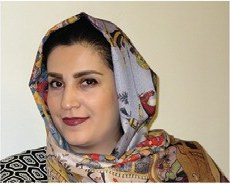
- NationalityIranian
- Works14
- Dated2014–2016
StatementAbout the work
It is tried to illustrated these artworks according to three concepts of battle, peace and love.in the painter's opinion, a paradisiacal world can be created by avoiding war and bloodshed (either hum beings or animals) and stepping towards peace and reaching to the warm and pleasant story of love.in this regard, looking at Iranian painting it can be realized that the Iranian painter has always tried to create a divine world, by creating a paradisiacal free world with cheerful and bright colors, a world beyond time and place. The Iranian painter has freely created a divine world, either in the terms of using colors or in terms of drawing dimensions, in the real from of human being or animal or even in the form of tree, house, river,..., and by using her desired colors with a philosophical insight and also by using golden and silver colors and by utilization of pure aesthetics. This collection, by the names of War Lady, No Hunting, and Qajar Lovers, which contains several artworks, is a small step to create friendship, and peaceful and soothing world with hopes.
Works14 artworks


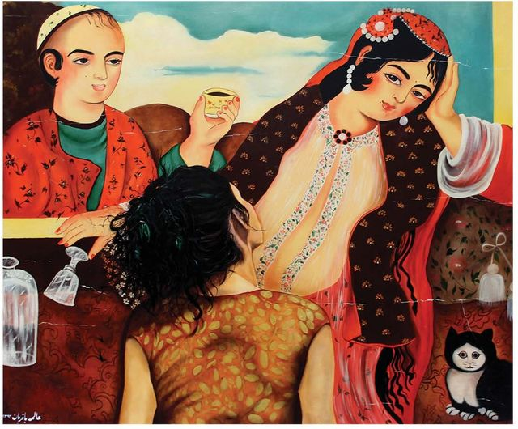

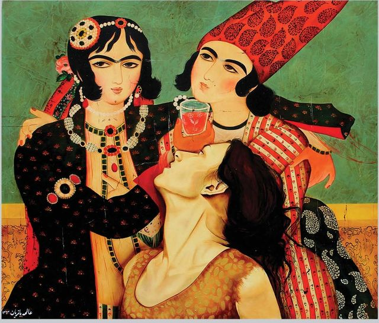

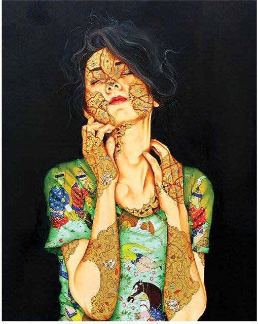

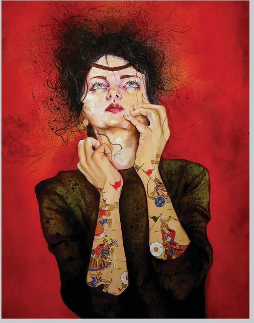

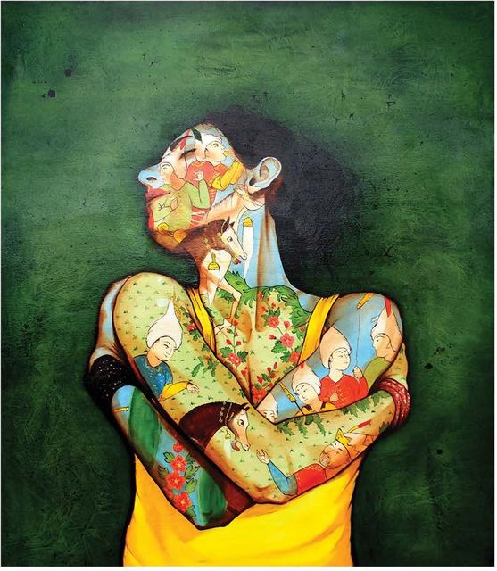

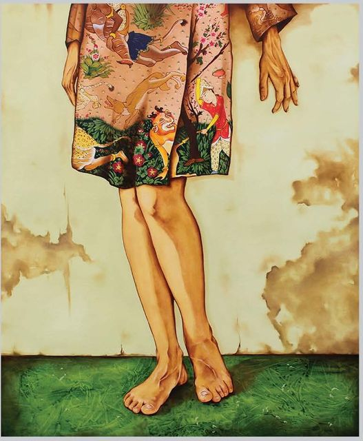

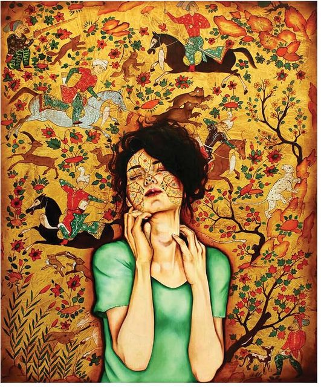

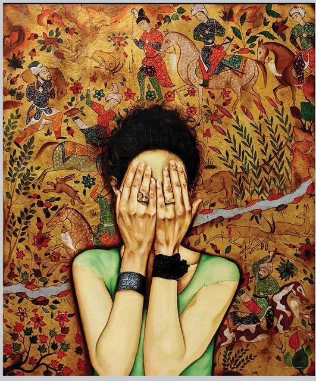

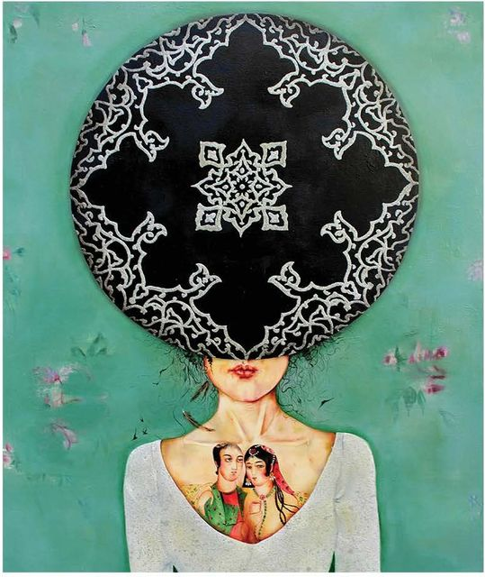

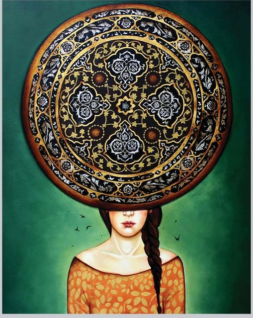

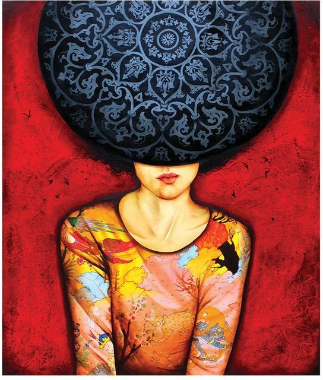

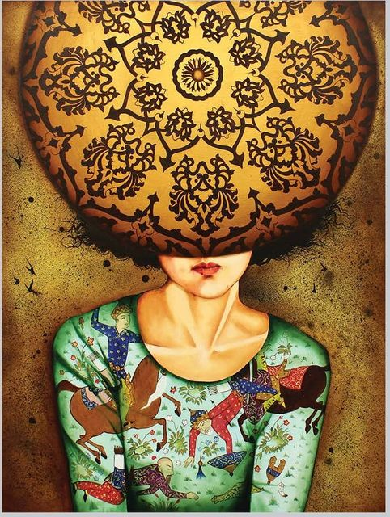

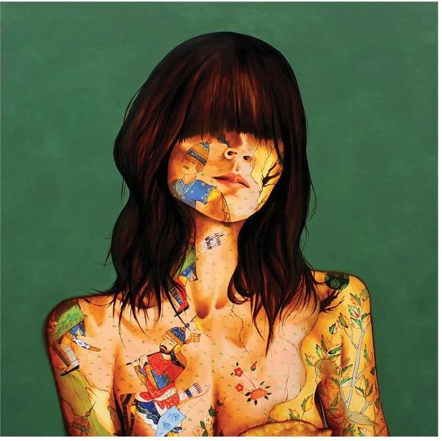
History of experienceBiography · education · exhibitions · awards
Profile
- MA of painting
- BA of carpet designing
- Member of Iranian Painting Society
- Member of the Contemporary Visual Art Institute
Solo exhibitions
- 2016Seyhoun Art Gallery|Tehran – Iran
- 2014Seyhoun Art Gallery|Tehran – Iran
- 2012illustration exhibition, Rooz Art Gallery
- 2011East Art Gallery
- 2011Shahed Art Gallery|Tehran – Iran
Group exhibition
- 2015200 Superior Artworks for Visual Arts Exhibition|France
- 2015Shin Gallery, Time museum|Tehran – Iran
- 2014Iranian international gallery exposition Qasr Garden museum|Tehran – Iran
- 2014Charity exhibition to benefit for rare disease, Tehran's Milad Tower|Tehran – Iran
- 2014Igreg Art Gallery|Tehran – Iran
- 2013Society of Iranian painters|Tehran – Iran
- 2012Siin Art Gallery|Tehran – Iran
- 2011The 4th international Fadjr Festival of Visual Arts|Tehran – Iran
- 2011Group painting workshop, Felestin art museum
- 2010Silk Road Gallery|Tehran – Iran
- 2009Nasle No selection exhibition, Homa Art Gallery|Tehran j – Iran
- 2008Group painting workshop, Shahed Art University|Tehran – Iran
- 2008First international student's festival, Imam Ali museum|Tehran – Iran
Biennial
- 2015III International Izmir Art Biennial|Turkey
Auction
- 2016Seyhoun Art Gallery Online Auction
- 2015Seyhoun Art Gallery Online Auction with the most bids
Source: the Sobhan Gallery artist catalogue “Alemeh Bagherian.pdf”.